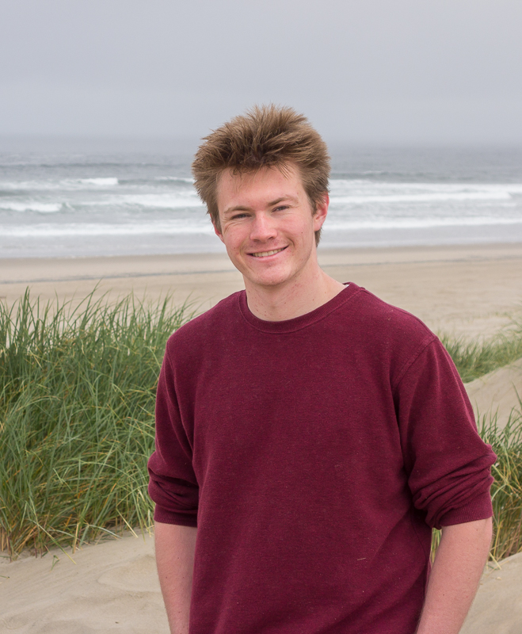

|  |
|
|
OverviewI am currently working on my B.S. in Computer Science as well as my B.S. in Physics at The George Washington University. I hope to complete both by May 2017. My central area of interest in physics is nuclear fusion through toroidal electromagnetic confinement . I have built a brain computer interface by following the instructions provided by OpenBCI and am currently working on basic EEG pattern recognition. If you have any questions, send me an email.
EducationI completed my International Baccalaureate Diploma at Washington-Lee High School in 2012.
Academic/Industry InterestsInternational Thermonuclear Experimental ReactorOpen Brain Computer Interface
SocietiesDelta Tau Delta @ GWSociety of Physics Students @ GW Association of Computing Machinery @ GW
Photographs courtesy of Robert Crandall
|